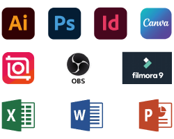
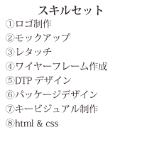

Yamamoto Takeshi
山本 武史
Yamamoto Takeshi
山本 武史
千葉経済大学 経済学部 経営学科 卒業
私はヒアリングをとても大切にしたいと考えています。
それらを丁寧に汲み取り、言語化と整理をすることでデザインの方向性を一緒に明確にしていきます。
丁寧なヒアリングと背景の掘り下げを通じてクライアントの本心を引き出し、エピソードのある深いデザインを目指しています。
私の1番の喜びは、本質を捉え、クライアントとの認識のズレをなくした納得感のあるデザインの提案をすることです。
また、私との関わりを通じてクライアント自身が魅力を再認識し、更なる繁栄に繋がることを大切にしたいです。


Tel : 070-3165-6558
Mail : yamatakeguard@icloud.com